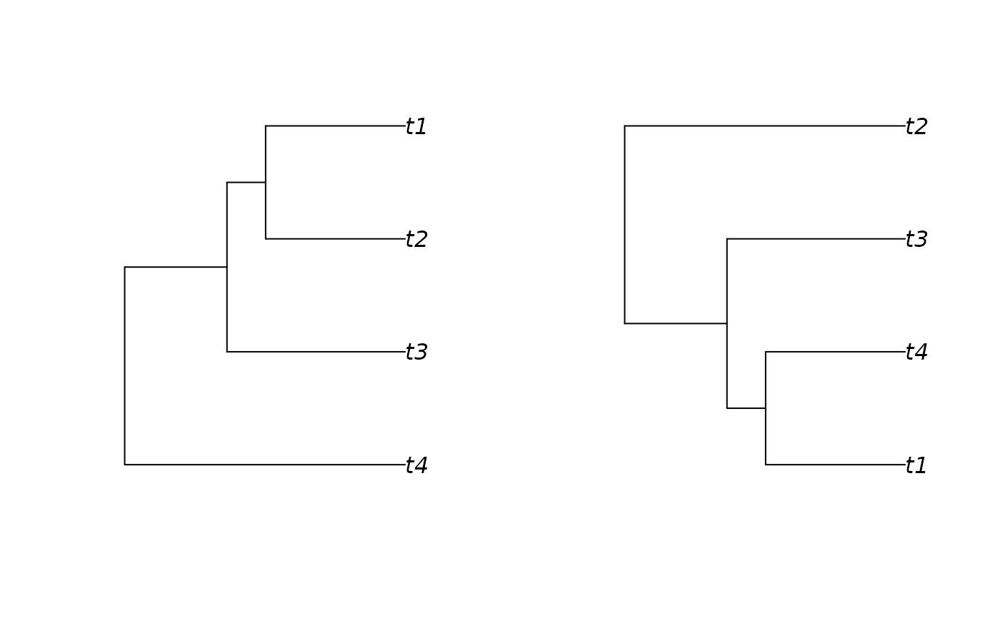

This function is a C++ implementation of the function DDD::phylo2L. An L table summarises a phylogeny in a table with four columns, being: 1) time at which a species is born, 2) label of the parent of the species, where positive and negative numbers indicate whether the species belongs to the left or right crown lineage, 3) label of the daughter species itself (again positive or negative depending on left or right crown lineage), and the last column 4) indicates the time of extinction of a species, or -1 if the species is extant.
Examples
simulated_tree <- ape::rphylo(n = 4, birth = 1, death = 0)
ltable <- phylo_to_l(simulated_tree)
reconstructed_tree <- DDD::L2phylo(ltable)
old_par <- par()
par(mfrow = c(1, 2))
# trees should be more or less similar, although labels may not match, and
# rotations might cause (initial) visual mismatches
plot(simulated_tree)
plot(reconstructed_tree)

par(old_par)
#> Warning: graphical parameter "cin" cannot be set
#> Warning: graphical parameter "cra" cannot be set
#> Warning: graphical parameter "csi" cannot be set
#> Warning: graphical parameter "cxy" cannot be set
#> Warning: graphical parameter "din" cannot be set
#> Warning: graphical parameter "page" cannot be set